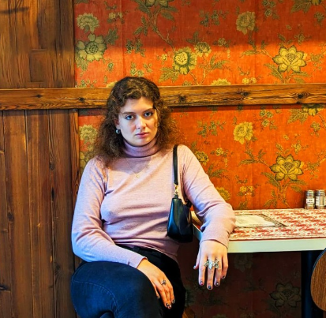

Human-centric, accessible technology.
The Problem Company is a digitalisation agency. Our greatest motivation is making advanced technology accessible to the underserved parts of the industry: the small to medium manufacturing companies, the creatives, and the custom producers.
Technology is too cold- and too invasive.
We were fed up with the image of the science-fiction robot taking over the world and the word "AI" plastered everywhere we looked.
Instead, we wanted to build a company where we untangle complicated concepts. The whole point of technology is to serve you. And good technology should be non-invasive, intuitive and easy to grasp.
So what can technology do for you?
We started this company with the core intention to bridge the gap between advanced technology, research, and real people: real businesses in the industry, that are facing real problems.
We choose to start with you- the human at the heart of every business.
We don't take the glitzy shortcuts that produce "cool tech". Instead, we go in-depth, and we strive to find the root problem- the kind of problems that demand lean and targeted, quality solutions. And we're sure not afraid to talk about problems.
Technology can enable us to be more human. To be more creative, more of the time. And this is our goal: to bring gentle, humane technology into the lives of purpose-driven fabricators, producers, and entrepreneurs. Because our world needs more quality and mindfulness.

TEAM
We are a small international team based in Bucharest, as an ode to our founder's home country. In between ourselves we share creative and technical skills- from design to coding, prototyping and hacking hardware, drones or industrial robots. We have a background in interdisciplinary academic research and if we were to label ourselves, we'd probably say that we're "creative hackers".
Meet our founder

Andreea Bunica
Ex-architect converted to creative technologist and impact-driven business advocate
Jobs
We currently have no available openings.
We are a small but expanding team and as our company grows we'll make more roles available through here and on Linkedin. We are always looking to meet new people that could eventually become part of the team, so feel free to reach out at hello@theproblemcompany.co if you feel like you connect with our topic and company interests.